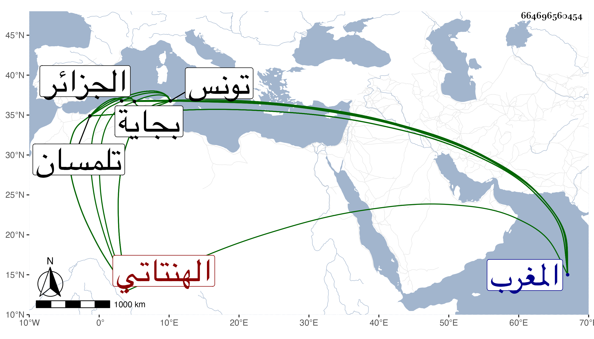

0902Sakhawi.DawLamic.ITO20230111-ara1.EIS1600.664696560454
Biography ID: 664696560454
479
عثمان بن محمد بن عبد العزيز بن أحمد بن محمد بن أبي بكر بن يحيى بن إبراهيم ابن يحيى بن عبد الواحد بن أبي حفص عمر المتوكل على الله أبو عمرو وقيل أبو سعيد بن أبي عبد الله بن أبي فارس بن أبي العباس الهنتاتي بفتح الهاء ثم نون بعدها مثناة ثم مثلها بعد ألف قبيلة من البربر الحفصي نسبة لجده الأعلى أبي حفص الذي كان يقال له انتاب ... أحد العشرة من أصحاب محمد بن تومرت المعروف بالمهدي لا لعمر بن الخطاب إذ هم من برابر المصامدة صاحب المغرب . ولد تقريبا بعد العشرين وثمانمائة بتونس وبها نشأ في كنف أبيه وجده وقرأ القرآن وشيئا من العلم ويقال ان جده أبا فارس كان يتوهم فيه النجابة وأنه صرح مرة بمصير الأمر إليه فكان كذلك فأنه لما مات تسلطن حفيده الآخر شقيق هذا أبو عبد الله محمد ولقب المنتصر وكان متمرضا فلم يتهن بالملك بل ولم تطل أيامه حتى مات وقول من قال إن أخاه عثمان قتله باطل بل هو المتولي لتمريضه حيث أرسل إليه فأحضره عنده لذلك وربما قيل أنه عهد إليه بالملك مع كونه ابن أربع عشرة سنة أو فوقها بيسير وبعد موته قتل القائد الهلالي وفتك بجماعة من أقاربه الحفاصة فخذ السلطنة وثار به عمه أبو الحسن صاحب بجاية وظفر به وتمهدت له الأمور وطالت في أيامه فإنه ولي ملك تونس وهو ابن ثمان عشرة سنة في سنة تسع وثلاثين ودام في الملك أربعا وخمسين سنة ودانت له البلاد والرعية وضخم ملكه جدا واجتمع له من الأموال وغيرها ما يفوق الوصف وأنشأ الأبنية الهائلة والخزانة الشرفية بجامع الزيتونة وجعل بها كتبا نفيسة للطلبة وبعد وصيته وطارت شهرته وهادته ملوك تلك الأقطار وكذا ملوك الفرنج وخطب له بالجزائر وتلمسان وجرى له مع صاحب تلمسان محمد بن أبي ثابت العبد الوادي أمور ومشى عليه غير مرة وتملك تلمسان وصالح صاحبها ، أثنى عليه غير واحد ممن لقيه وآخر من حدثني ممن قدم من عنده أبو الخير بن الفاسي المكي ولم يزل على مكانته بحيث عهد لولده مسعود فمات في شعبان سنة ثلاث وتسعين فحزن عليه جدا وعهد ليحيى بن مسعود المذكور ، ولم يلبث أن مات صاحب الترجمة في ليلة عيد الفطر منها رحمه الله وعفا عنه .
